DwelLogs
DwelLogs
What it looks like.
A walk through the whole thing, from an empty screen to a place that tells you what it needs. Nothing here is a mock-up — every screen is the app.
Start by pointing at it
A house, a ranch, a farm, a cabin, a tiny house, a boat, or a patch of land with nothing on it yet. One tap and you are in — no form to fill in first.
What you pick changes what you get asked later. A boat is never asked about a basement; a pasture is asked about power and nothing else.
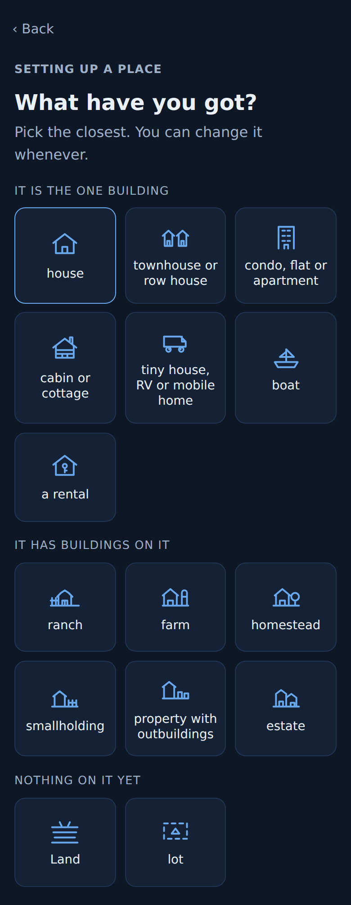
Then fill in as much or as little as you like
No wizard. Every tile is a door, and each one tells you what it already has. Take me in is there from the first second.
“Not set” is a state, not a failure. If you want to say nothing about the weather and go straight to the broken dryer, do that.
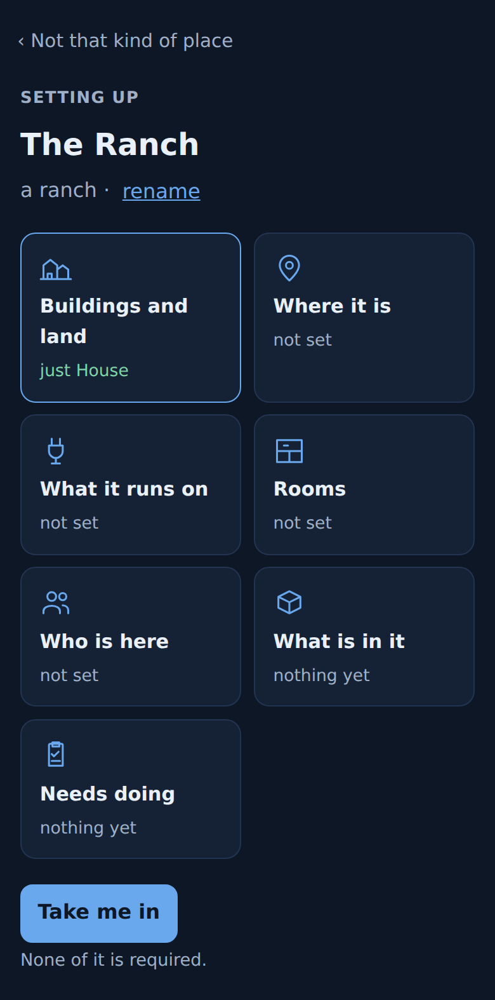
Where it is, and what that costs you
The climate is guessed from your region and corrected by you. Where it sits is a separate question, because two houses at the same height in the same county need different work: a valley floor frosts when the hill above it does not, trees mean gutters, salt air eats metal.
Elevation is a number rather than a tick called “high altitude”, because nobody knows whether they are it. Below about 2,000 ft it changes nothing.
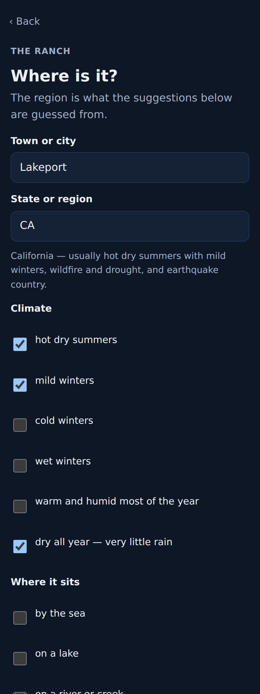
What it actually runs on
Well or city water. Septic or sewer. Wood and propane and kerosene, because one house often runs all three. Each answer brings its own check-ups with it.
Not sure yet is a real answer and stays one. Nothing you have not answered will ever chase you about it.
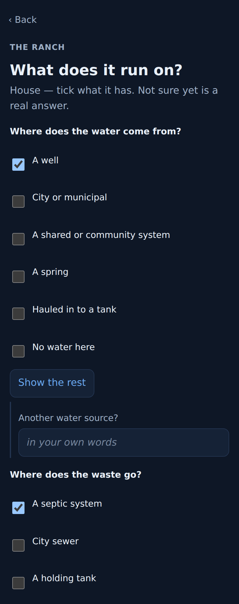
Who is here, and what lives with you
How many people, whether there are children among them, anyone you want on the log, and the animals. Feed runs out and papers expire exactly like anything else.
People affect wear, so the app will offer a shorter interval on the things that take the beating and say why. It never quietly changes one.
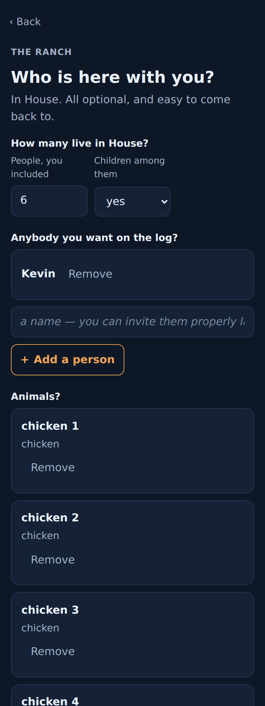
Three fridges is an ordinary number of fridges
Counts rather than ticks, because one row for all three would lose two of them. Each gets its own check-ups, and every interval says where it came from — the manual, the code, or our estimate.
Nothing needs a name. Leave it blank and it is called what it is; a second shed becomes Shed 2.
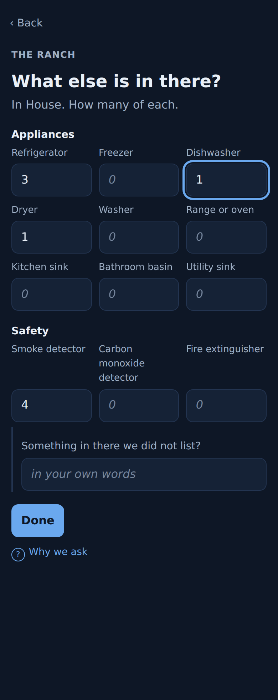
The barn, the coop, the wrap-around deck
A place can hold as many buildings as it has. Attached still counts as its own building — a deck gets sealed and a greenhouse gets glazing, and neither belongs on the house’s list.
One of them can belong to somebody else. A tiny house parked on your land is theirs: you see that it is here and what it is hooked up to, and they decide whether you see anything more.
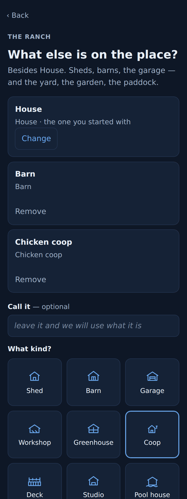
What needs doing
Nobody sets a place up mid-leak. They do it on a calm morning with three or four jobs already in their head — so this is a list you add to, this week or next week or sometime, and it grows as you go.
A chore and a fault are the same shape here, so a thing that starts as the dryer keeps stopping and ends as a new dryer never gets filed twice. The notes box is where the symptom goes — stops mid-cycle, cold when it does — because that is the part you forget by the time somebody asks.
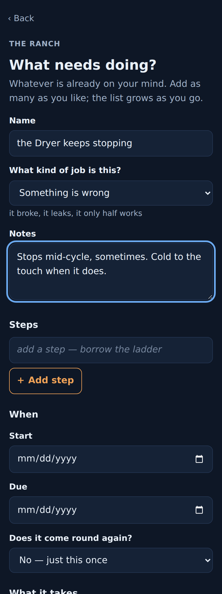
Then it has a pulse
Not a decoration. The line is drawn from your own things — one shape per thing you track, in the order you added them, and its height is how close that thing is to needing you. A well gets a pump curve, a septic tank a square wave, anything that burns a flame spike.
Two places never draw the same line, and yours changes as the place does. A calm line is a true reading, not a reward.
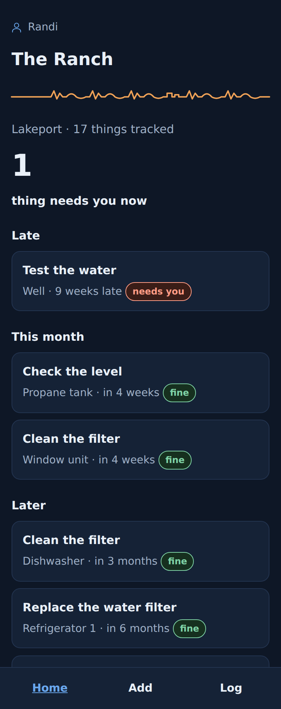
It speaks when you ask it to
Off by default. Choose an email digest, or a feed your own calendar reads, and set a cap it will not go past.
Silence is a correct output — an empty digest is never sent. And a thing whose answer is “not sure yet” produces no reminder at all: somebody who moved in during June is not chased about winterising they cannot judge.
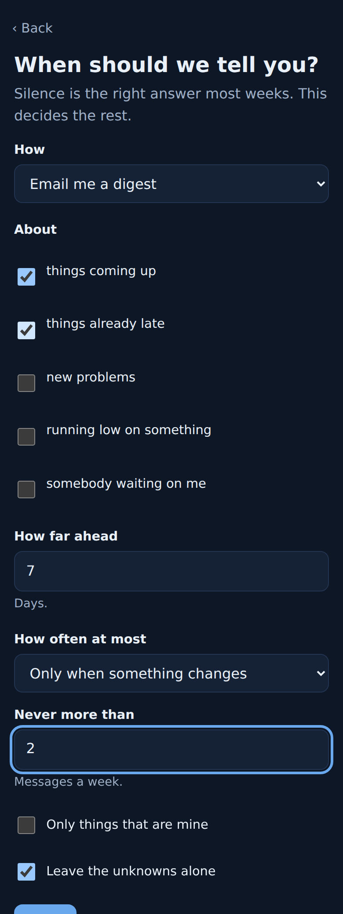
And it is not all in one person’s head
Invite somebody and they get a link that carries everything — one tap and they are in, with nothing to set up on their end. They see what is due and can say they did it.
Costs are off by default and on their own switch. Somebody helping with the list does not need to know what the roof quote came in at.
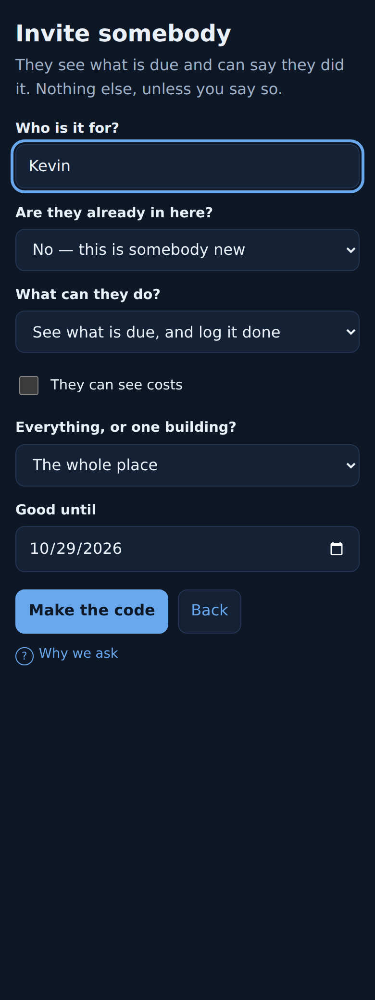
For wherever you dwell
Houses, condos, rentals, ranches, farms, tiny houses on wheels and boats — including what lives with you. Free, and yours to take with you.